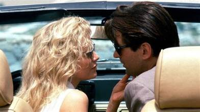
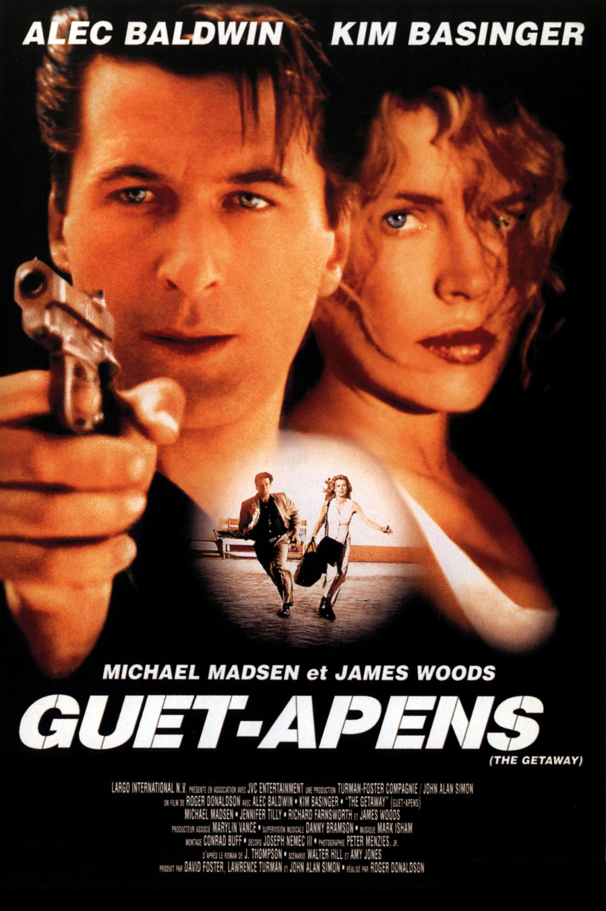
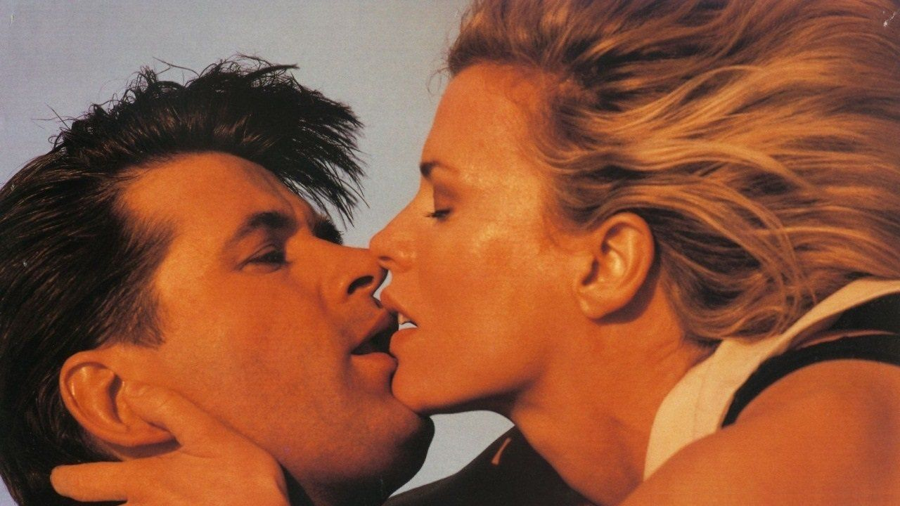

Je cherchais un film à regarder.
C'était dans l'armoire de mon grand-père. Des dizaines de cassettes. J'en ai pris une au hasard — enfin, pas tout à fait au hasard.
Sur la jaquette, deux visages que je reconnaissais.
Alec Baldwin. Kim Basinger.
J'avais onze ans. Je ne savais pas encore qui était Sam Peckinpah, ni que ce film allait être descendu par la critique.
Je savais juste que le casting était solide.
Et le film m'a donné bien plus que ce que je cherchais.
Ce soir, on rouvre la cassette.

Alec Baldwin & Kim Basinger — Guet-Apens, 1994
Guet-Apens.
1994. Réalisé par Roger Donaldson. Avec Alec Baldwin et Kim Basinger.
Le remake du film culte de Sam Peckinpah sorti en 1972 avec Steve McQueen et Ali MacGraw. Une comparaison dont le film ne se remettra jamais vraiment aux yeux de la critique.
Sorti en salles avec une distribution correcte, reçu froidement, oublié rapidement.
Ce qu'on trouve à l'intérieur mérite mieux que ce verdict.
Un thriller de braquage tendu, bien construit, porté par un duo qui fonctionne — et une scène au champ de course qui rappelle pourquoi on aimait le cinéma d'action des années 90.
1994.
Alec Baldwin est en pleine mutation. Après The Hunt for Red October et Glengarry Glen Ross, il cherche à s'imposer comme star d'action crédible tout en conservant sa réputation d'acteur sérieux. Kim Basinger sort de Batman et de Final Analysis — deux films qui l'ont installée comme l'une des actrices les plus bankables du moment.
Roger Donaldson prend les commandes. Un réalisateur australien discret mais solide — No Way Out, Cocktail, White Sands. Quelqu'un qui sait diriger des acteurs et construire une séquence sans se perdre dans l'esbroufe.
Le projet est ambitieux. Refaire Peckinpah, c'est s'attaquer à l'un des thrillers les plus respectés des années 70. La presse le sait avant même que le film ne sorte. La comparaison est inévitable, le verdict presque écrit d'avance.
Mais Donaldson ne cherche pas à faire du Peckinpah. Il fait du Donaldson — propre, efficace, ancré dans son époque.
Et le film qui en résulte est meilleur que sa réputation ne le laisse entendre.

Guet-Apens (The Getaway) — affiche française, 1994
Doc McCoy sort de prison.
Cinq ans de détention pour un braquage raté. Sa femme Carol l'a attendu, négocié sa libération, manœuvré dans l'ombre pour le faire sortir.
Mais rien ne sort jamais vraiment libre. Derrière la libération, il y a une dette. Et derrière la dette, un nouveau braquage à exécuter — sans le choix, sans le temps de souffler.
Le film commence là où d'autres s'arrêteraient — après la prison, avant la fuite. Et c'est ce qui l'intéresse vraiment : comment deux personnes tiennent ensemble sous la pression, quand tout s'effondre autour d'elles.
La scène au champ de course dit tout ce qu'il y a à savoir sur ce film. Pas un simple braquage. Une mécanique parfaitement huilée qui déraille exactement là où on ne l'attend pas.
L'action, la route, la traque.
Et entre Baldwin et Basinger — quelque chose de plus compliqué que de l'amour.
Le problème de Guet-Apens est simple.
Il s'appelle Sam Peckinpah.
Pas le réalisateur lui-même — son fantôme. L'original de 1972 avec Steve McQueen est entré dans la légende du thriller américain. Toute la critique de 1994 a jugé ce film sur ce qu'il n'était pas plutôt que sur ce qu'il était. Et c'est une façon de regarder un film qui condamne d'avance.
Parce que pris pour ce qu'il est — un thriller de route des années 90, bien écrit, bien dirigé, bien joué — Guet-Apens remplit pleinement sa promesse.
Roger Donaldson sait ce qu'il fait. Il ne cherche pas à rivaliser avec Peckinpah. Il construit son propre film avec ses propres outils — une mise en scène propre, un rythme maîtrisé, une tension qui monte progressivement sans jamais forcer.
Et Baldwin et Basinger fonctionnent ensemble. Pas uniquement parce qu'ils étaient mariés dans la vraie vie à l'époque — mais parce qu'ils apportent une fragilité commune à leurs personnages. Doc et Carol ne sont pas des héros invincibles. Ce sont deux personnes qui essaient de survivre à une situation qui les dépasse, et qui ne sont pas sûrs de pouvoir se faire confiance l'un l'autre.
C'est ça que l'original de Peckinpah avait. Et c'est ça que ce remake a su conserver.
La scène au champ de course en est la démonstration parfaite — tendue, précise, inattendue dans sa façon de basculer.

Alec Baldwin & Kim Basinger — Guet-Apens, 1994
Guet-Apens n'avait aucune chance.
Pas parce qu'il était mauvais. Parce que la comparaison avec Peckinpah était inscrite dans son ADN dès le premier jour. Refaire The Getaway en 1994, c'est accepter d'avance que chaque critique commencera par l'original et finira par le remake — dans cet ordre, avec cette hiérarchie.
La presse américaine a été impitoyable. Pas violente — indifférente. Ce qui est pire. Un film qu'on massacre au moins existe dans la conversation. Un film qu'on expédie en deux paragraphes disparaît sans laisser de trace.
Baldwin était par ailleurs dans une période commercialement compliquée. Les films qu'il choisissait ne trouvaient pas leur public. Et Basinger, malgré son statut, n'était pas une garantie au box-office.
Le film sort, déçoit en salles, passe en VHS.
Et là il trouve un public — celui qui ne connaît pas forcément l'original de Peckinpah, celui qui met la cassette pour Baldwin et Basinger et qui repart surpris par ce qu'il vient de voir.
Ce public-là existait. Il n'a jamais été compté.
Parce que la comparaison avec Peckinpah n'est plus le sujet.
En 2026, l'original de 1972 existe dans sa propre case — classique incontestable, œuvre d'un cinéaste majeur, film d'une époque précise. Il n'a plus besoin d'être défendu.
Ce qui veut dire que Guet-Apens peut enfin être regardé pour ce qu'il est.
Et ce qu'il est, c'est un thriller solide, bien construit, avec deux acteurs au sommet de leur présence à l'écran. Baldwin n'a jamais été aussi physique, aussi concentré. Basinger n'a jamais été aussi centrale — Carol n'est pas un accessoire de l'histoire, elle en est le moteur.
Trente ans après, la scène au champ de course reste une des séquences d'action les mieux construites de la décennie. Pas la plus spectaculaire. La plus intelligente.
J'avais onze ans quand j'ai pris cette cassette dans l'armoire de mon grand-père sans savoir ce que je cherchais.
Ce film m'a appris quelque chose ce soir-là — qu'un bon film n'a pas besoin d'être original pour être bien. Il a juste besoin d'être honnête.
Guet-Apens l'est.
Guet-Apens ne sera jamais The Getaway de Peckinpah.
Il ne l'a jamais prétendu.
Ce qu'il est, c'est un film de 1994 qui fait son travail avec sérieux, avec talent, et sans chercher à être autre chose que ce qu'il est. Un thriller de route, un couple sous pression, une fuite qui n'en finit pas.
J'avais onze ans. Je ne connaissais pas Peckinpah. Je ne savais pas que ce film allait être descendu par la critique.
Je savais juste que le casting était solide.
Et trente ans plus tard, je maintiens.
La cassette est dans le lecteur. On rembobine.
Titre original
The Getaway
Pays
États-Unis
Genre
Thriller / Action
Durée
115 min
Producteur
Universal Pictures
Avec aussi
Michael Madsen · James Woods
Remake de
The Getaway — Sam Peckinpah (1972)
Fil conducteur
Victime de comparaison — Saison 1
SOMEDAY — EP. 07